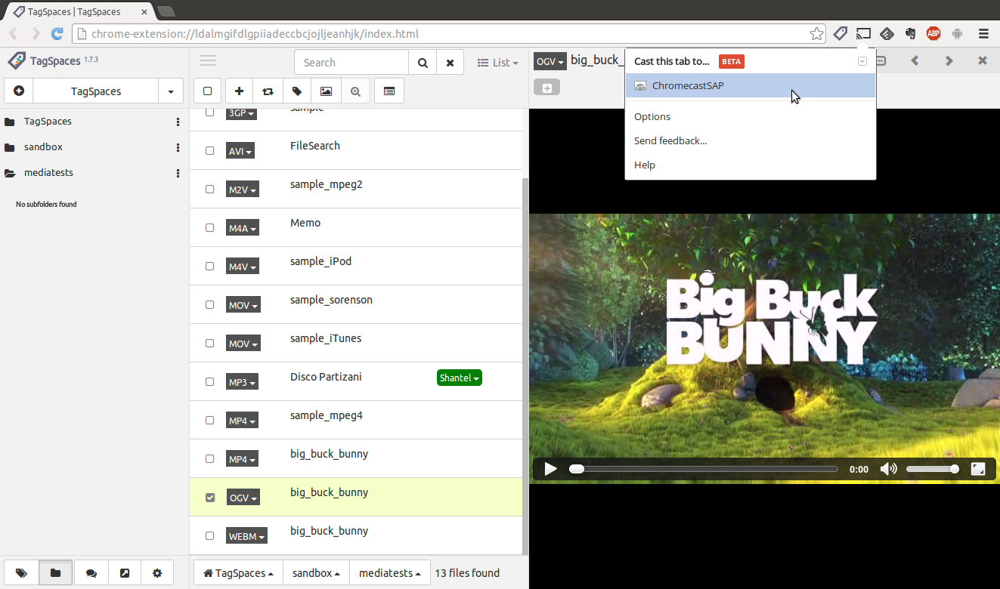

Playing local music and videos with TagSpaces
The audio video player
TODO: present the key functionalities

Projecting content to Chromecast™
Since the release of the Google's Chromecast some years ago, we were really keen to find a way how to cast my local content such as music, photos and movies to a TV. This use case is currently not possible out of the box with Chromecast, but with help of the TagSpaces Chrome extension it is very easy to achieve it.
The only thing you need beside a Chromecast and of course TagSpaces is the Chromecast extension for Chrome. With this extension you basically project the content of a tab in Chrome to your Chromecast device. The extension can be downloaded directly from the Google's Web Store. After the installation you will see a small icon of this extension in the Chrome's toolbar, as seen in the screenshot bellow.
So now after starting TagSpaces and navigating to a folder with videos for example, you can just open one and click on the Chromecast button in the browser. From the popup you can choose the desired Chromecast device and then you are ready. The desired movie is now played on your TV. If you want to see the movie on full screen, just press the full screen button in the movie player.
